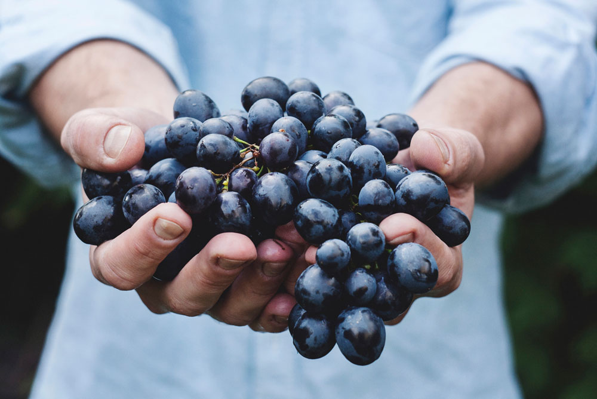

Feeding your body with whole foods and natural produce is the best long-term strategy for maintaining good health.
LiquidLab is part of that strategy.
Our cold pressed juice is packed with easily digestible raw vitamins, minerals and enzymes from locally-sourced fresh fruits and vegetables. Reach your full potential through balance, not extremism. Whatever your lifestyle, we’ve got a juice to help get you there.

High-quality. Fresh ingredients. Custom-selected.
When you register for LiquidLab’s custom service, we’ll put together a juice program tailored to your current lifestyle and health goals. If you’re already committed to a healthy lifestyle and are looking to incorporate fresh juice as part of a balanced diet, our custom plan might be just what you’re looking for. It takes about 15 minutes to get started.
1
Step 1
Long hours? Marathon training? Tell us how you currently live.
2
Step 2
Where will you go with LiquidLab? Share your nutritional goals with us!
3
Step 3
Let us know about your current diet and favorite flavors.
Get started now, and discover the benefits of individualized LiquidLab juices!
“LiquidLab is a nutritious way for me to complement my active, on-the-go lifestyle without sacrificing quality fresh juices the way I want it.”
Jump-start a healthy you with LiquidLab.
The Sweet Tooth
If your motto is “eat dessert first,” this plan will have you saying “drink juice first.” The Sweet Tooth Sampler includes three of our healthy, delicious fruit smoothie blends: Mixed Berry, Strawberry-Banana and Blueberry Cobbler, together in one sampler.
All the benefits of eating a salad, but in a delicious juice blend you can grab and drink on the go. This sampler includes three vegetable blends rich in dark leafy greens like kale, spinach and swiss chard. And best of all, there are no dishes to wash when you’re done!
Ride the subway? Protect yourself from airborne illness by boosting your immune system with antioxidants. This sampler includes three blends that will help your body put up its best defense: our Beet Blast, Carrot Ginger and Dark Chocolate Coffee.
At LiquidLab, we think green. We work with local farms to source our all-organic produce. Nothing goes into our juice that isn’t from within a 100-mile radius of our headquarters. Meaning we use less fossil fuels to transport and produce our juice. And support small local farms in the process.
Learn more about our commitment to the environment.
We don't tell you what healthy means. Instead, we celebrate choosing whatever healthy means to you. Our blog is full of resources to help you make enlightened choices for healthy living, complete with travel tips, healthy home ideas, recipes and fitness guides.
LiquidLab was founded in 2014 by three close friends who wanted to help others improve their lifestyle and incorporate more fresh fruit and veggies into their diets.